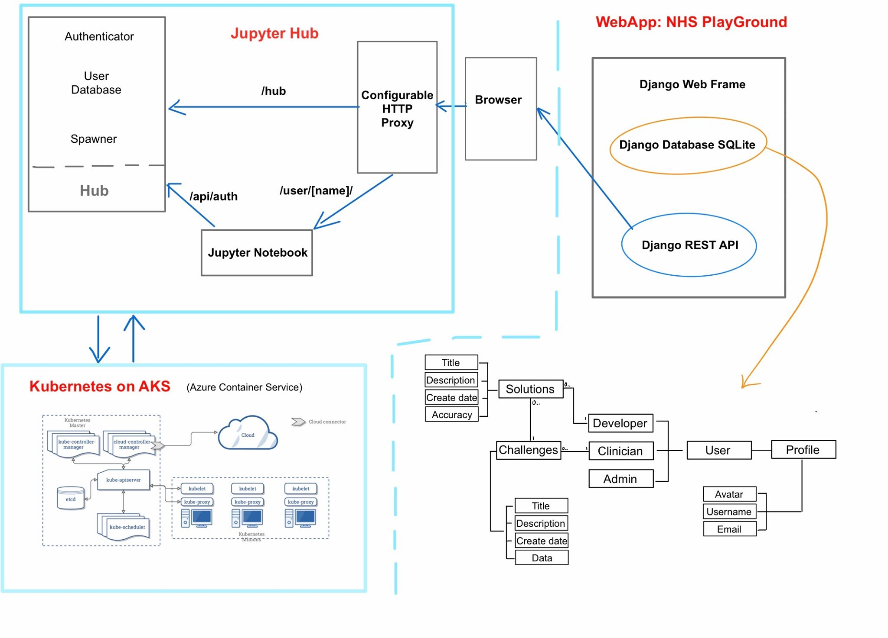
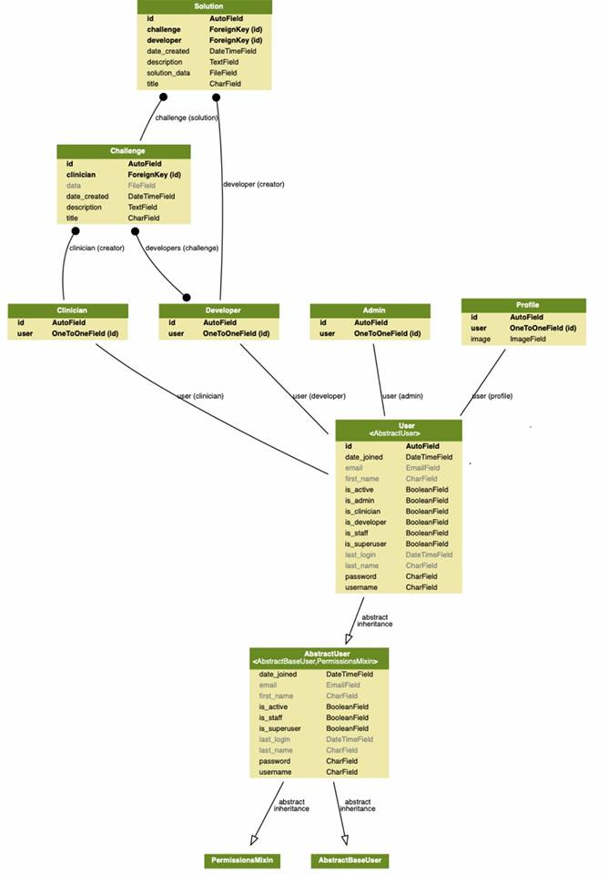

Prototype
System Architecture Diagram
Description of Each Component
WebApp: NHS PlayGround
The NHS PlayGround application is developed mainly with Django web framework. Regarding front-end, we implement html templates rendered in Django. As for the database, the Django SQLite is used to store the information of different types of users, the challenges provided by clinicians and the solutions uploaded by AI developers. Additionally, Django REST framework is used to develop the JupyterHub REST API.
JupyterHub
JupyterHub is a multi-user server that manages and proxies multiple instances of the single-user Jupyter notebook server.
Three subsystems make up JupyterHub:
- a multi-user Hub (tornado process)
- a configurable http proxy (node-http-proxy)
- multiple single-user Jupyter notebook servers (Python/IPython/tornado)
Kubernetes on AKS
Azure Kubernetes Service (AKS) which is a managed container orchestration service based on the open source Kubernetes system. Kubernetes is the best choice to set up our own JupyterHub on a cloud and leverage the clouds scalable nature to support large groups of users. Based on Kubernetes, resources on the cloud can be managed.
ER Diagram to Database Design

Implementation of Main Finished Functionalities
- Django's user authentication system allows setting up of different user types, user registration and logging in.
We used the Django admin framework to implement this feature which acts as a layer of security as only people with account can access site and thus data.
- Upload/download of CSV files (results and dataset)
This function is achieved with Django built-in form submission support. Different form types can be used to submit a varied type of data, in our case enctype="multipart/form-data" is used for file submission.
- Deploy on Azure and provide cloud computing services
To deploy the JupyterHub on Azure, we chosed the Azure Kubernetes Service(AKS) which can provide a fully managed Kubernetes container orchestration service. Firstly, we prepared our Azure shell environment using the Azure interactive shell.
- Set up JupyterHub server and integrate JupyterHub to the site to provide onsite coding environment